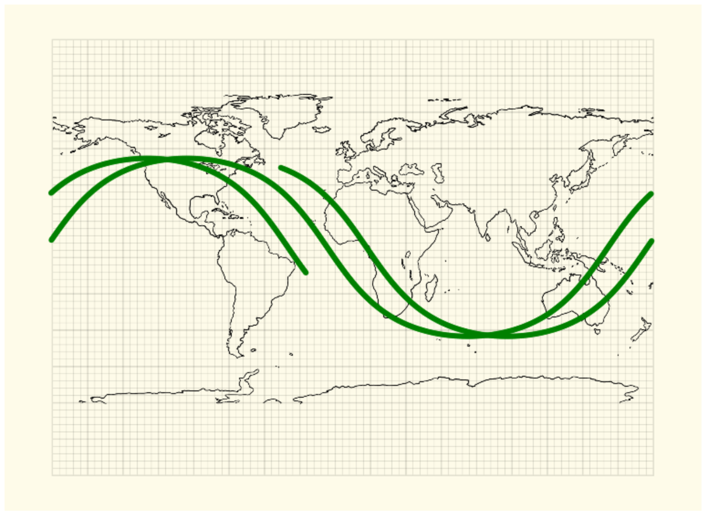

Back to Randomise USR 0 home
ISS Space Station Location
2018-03-12
In response to @cassido challenge, I came up with a small JS that uses Nathan Bergey API to display the route of the ISS space station on a Map.
My "challenge" here was actually to come up with a pretty map for representing the route instead of using an existing MAP API.
I ended up using an Apple Pencil to contour a world map on top of a graphing paper background (I am a fan of graphing paper) (sorry for any inaccuracies)
There's a slight error due to the fact that I am not making any projection corrections.
Check the ISS tracking webpage here.
If you leave the webpage open for two to three hours, you will get a plot similar to the one below.
